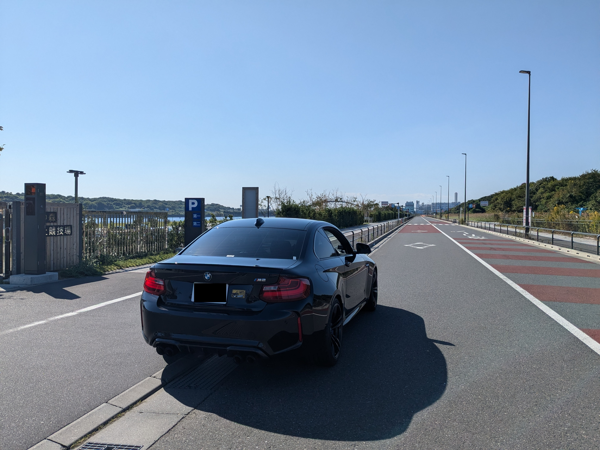
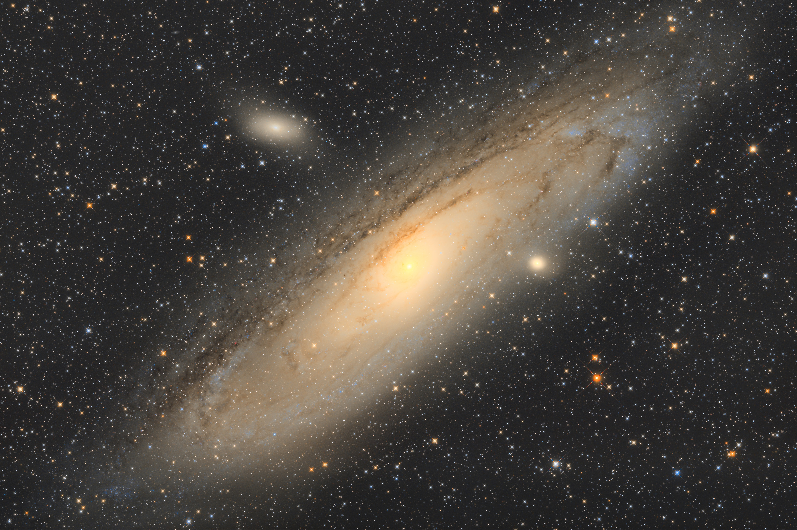
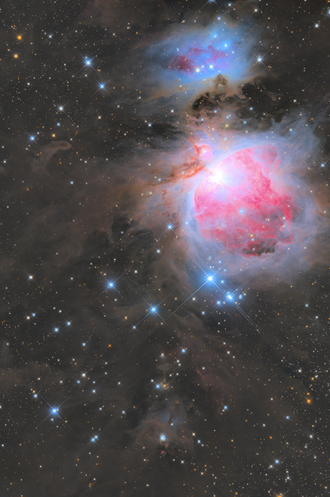
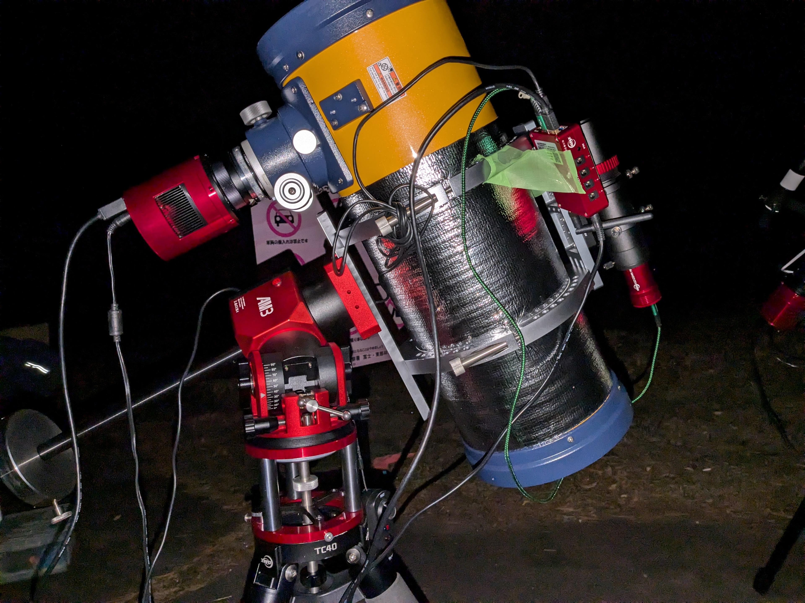

<!DOCTYPE html>
<html>

<head><meta name="generator" content="Hexo 3.8.0">
  <meta charset="utf-8">
  
    <title>
      
        2024年11月 福島県某所，育樹祭記念広場 | 
            ほしよみ社会塵のブログ
    </title>
    <meta name="viewport" content="width=device-width">
    <meta name="description" content="2024年11月今年の11月は遠征に2回行きました．やはり秋は天体観測の季節ですね．">
<meta name="keywords" content="写真,天体写真,機材,カメラ,鏡筒,赤道儀,遠征記">
<meta property="og:type" content="article">
<meta property="og:title" content="2024年11月 福島県某所，育樹祭記念広場">
<meta property="og:url" content="http://dabokun.github.io/2024/12/03/00000076-2024-11-fukushima/index.html">
<meta property="og:site_name" content="ほしよみ社会塵のブログ">
<meta property="og:description" content="2024年11月今年の11月は遠征に2回行きました．やはり秋は天体観測の季節ですね．">
<meta property="og:locale" content="ja">
<meta property="og:image" content="http://dabokun.github.io/2024/12/03/00000076-2024-11-fukushima/card.jpg">
<meta property="og:updated_time" content="2024-12-04T14:20:10.594Z">
<meta name="twitter:card" content="summary_large_image">
<meta name="twitter:title" content="2024年11月 福島県某所，育樹祭記念広場">
<meta name="twitter:description" content="2024年11月今年の11月は遠征に2回行きました．やはり秋は天体観測の季節ですね．">
<meta name="twitter:image" content="http://dabokun.github.io/2024/12/03/00000076-2024-11-fukushima/card.jpg">
<meta name="twitter:creator" content="@astrodabo">
      
        <link rel="alternative" href="/atom.xml" title="ほしよみ社会塵のブログ" type="application/atom+xml">
        
          
            <link rel="icon" href="/images/favicon.png">
            
              <link rel="stylesheet" href="/css/style.css">
                <!--[if lt IE 9]><script src="//html5shiv.googlecode.com/svn/trunk/html5.js"></script><![endif]-->
                
                  <script data-ad-client="ca-pub-1350688970555904" async src="https://pagead2.googlesyndication.com/pagead/js/adsbygoogle.js"></script>
</head></html>
<body>
  <div id="container">
    <div class="mobile-nav-panel">
	<i class="icon-reorder icon-large"></i>
</div>
<header id="header">
	<h1 class="blog-title">
		<a href="/">
			ほしよみ社会塵のブログ
		</a>
	</h1>
	<nav class="nav">
		<ul>
			
				<li><a href="/">
						Home
					</a></li>
				
				<li><a href="/categories">
						Categories
					</a></li>
				
				<li><a href="/tags">
						Tags
					</a></li>
				
				<li><a href="/archives">
						Archives
					</a></li>
				
				<li><a href="/about">
						About
					</a></li>
				
				<li><a href="/work">
						Work
					</a></li>
				
					<li><a id="nav-search-btn" class="nav-icon" title="Search"></a></li>
					<li><a href="https://github.com/dabokun"></a>
					</li>
					<li><a href="https://twitter.com/astrodabo"></a></li>
					
						<li><a href="/atom.xml" id="nav-rss-link" class="nav-icon" title="RSS Feed"></a>
						</li>
						
		</ul>
	</nav>
	<div id="search-form-wrap">
		<form action="//google.com/search" method="get" accept-charset="UTF-8" class="search-form"><input type="search" name="q" class="search-form-input" placeholder="Search"><button type="submit" class="search-form-submit">&#xF002;</button><input type="hidden" name="sitesearch" value="http://dabokun.github.io"></form>
	</div>
</header>

    <div id="main">
      <article id="post-00000076-2024-11-fukushima" class="post">
	<footer class="entry-meta-header">
		<span class="meta-elements date">
			<a href="/2024/12/03/00000076-2024-11-fukushima/" class="article-date">
  <time datetime="2024-12-03T02:48:27.000Z" itemprop="datePublished">2024-12-03</time>
</a>
		</span>
		<span class="meta-elements author">astr0dab0</span>
		<div class="commentscount">
			
			<a href="http://dabokun.github.io/2024/12/03/00000076-2024-11-fukushima/#disqus_thread" class="article-comment-link">Comments</a>
			
		</div>
	</footer>
	
	<header class="entry-header">
		
  
    <h1 class="article-title entry-title" itemprop="name">
      2024年11月 福島県某所，育樹祭記念広場
    </h1>
  

	</header>
	<div class="entry-content">
		
		
		<div id="toc" class="toc-article">
			<p class="toc-title">目次</p>
			<ol class="toc"><li class="toc-item toc-level-3"><a class="toc-link" href="#2024年11月"><span class="toc-number">1.</span> <span class="toc-text">2024年11月</span></a></li><li class="toc-item toc-level-3"><a class="toc-link" href="#福島県某所"><span class="toc-number">2.</span> <span class="toc-text">福島県某所</span></a></li><li class="toc-item toc-level-3"><a class="toc-link" href="#育樹祭記念広場"><span class="toc-number">3.</span> <span class="toc-text">育樹祭記念広場</span></a></li></ol>
		</div>
		
		<h3 id="2024年11月"><a href="#2024年11月" class="headerlink" title="2024年11月"></a>2024年11月</h3><p>今年の11月は遠征に2回行きました．やはり秋は天体観測の季節ですね．</p>
<a id="more"></a>
<h3 id="福島県某所"><a href="#福島県某所" class="headerlink" title="福島県某所"></a>福島県某所</h3><p>11月3日文化の日には福島県の某所へ．天文仲間の知り合いの方が集まるということで出かけました．<br>文化の日は「晴れの特異日」とよばれ，統計的に晴れることが多く，今年も例に漏れず北関東に出れば晴れを狙えそうな予報でした．<br>途中千葉で友人を拾いがてら聖地巡礼…．壊れていた車で行く久々の遠征です．</p>
<p></p>
<p>温泉に入って（タオル忘れて無事湯冷めした）到着すると，よく晴れてはいますが前日に雨が降ったこともあり透明度は若干低く眠い感じ．<br>最近また冷却 CMOS の機嫌が悪く安定するまでに時間がかかる．はやく 2600MC Air を導入して一息つきたいものです．<br>夜半過ぎになると，コントラストも改善し暗い空が広がりました．ガイドが乱れない程度の微風も拭き夜露結露に悩まされることもなかったです．<br>カメラも安定運用に入り2天体を合計8時間ほど露光，このツンデレめ．</p>
<p></p>
<div style="text-align: center;">
「M31 アンドロメダ銀河」<br>
2024年11月3日19時15分～23時50分 福島県某所<br>
ε-160ED<br>
QHY268PH C<br>
Gain 26/Offset 50/-20℃/180s*80<br>
Optolong UV/IR Cut 2''<br>
Total: 240min<br>
タカハシ EM-200 TemmaPC Jr. + MGEN-3<br>
Adobe Photoshop CC / PixInsight<br>
<a href="https://www.astrobin.com/b645gr/" target="_blank" rel="noopener">AstroBin</a><br><br>
</div>

<p></p>
<div style="text-align: center;">
「M42 オリオン大星雲」<br>
2024年11月4日0時6分～4時46分 福島県某所<br>
ε-160ED<br>
QHY268PH C<br>
Gain 26/Offset 50/-20℃/180s*91<br>
Optolong UV/IR Cut 2''<br>
Total: 273min<br>
タカハシ EM-200 TemmaPC Jr. + MGEN-3<br>
Adobe Photoshop CC / PixInsight<br>
<a href="https://www.astrobin.com/qbqlvr/" target="_blank" rel="noopener">AstroBin</a><br><br>
</div>

<p>εにも慣れてきたところで有名天体を狙ってみました．空も暗いですしね．<br>僕は違いますが，望遠鏡を毎年買っているような人は毎年のように有名天体を撮る，天体写真好きあるあるだと思います．<br>M31 はやはり画像処理が難しい．多くの人が個性をもってうまく処理をしているので，自分のなかでの理想がなかなか確立しづらい気がします．逆に M42 は自分のなかに理想があって，それに近づけることで今まで自分が撮ってきたなかでは一番いい出来に仕上がったのではないかと思います．<br>シーイングのおかげで望遠鏡のポテンシャルもこれまでで最大限に発揮された気がします．ここまで来ると，AI系の星像補正ツールは最早無用の長物だと感じます．<br>TOA 等を使っていてもそうなんですが，「これいいな」と自分の中で合格点が出ている画像に対して BXT 等をかけても「あんまり変わらないな」という感想にしかならないんですよね．</p>
<h3 id="育樹祭記念広場"><a href="#育樹祭記念広場" class="headerlink" title="育樹祭記念広場"></a>育樹祭記念広場</h3><p>そして月末は育樹祭へ．上述の福島の時よりもオンラインの天文仲間を含め，多くの人が集いました．<br>会社の同期にも声をかけて連れていきました．</p>
<p></p>
<p>かくいう自分は到着後に MGEN3 関係の一式を忘れたことに気づき途方に暮れていたのですが，<a href="https://x.com/ShonanAstroPhot" target="_blank" rel="noopener">けーたろさん</a>，<a href="https://x.com/hotan666" target="_blank" rel="noopener">Wada さん</a>，<a href="https://x.com/magicalflute77" target="_blank" rel="noopener">Aramis さん</a>が機材を提供してくれるなどとおっしゃってきます．背に腹は代えられまい．<br>最初はガイド機材だけ借りようと思ったのですが，EM-200 にいくガイドケーブルがありません．なら AM3 と三脚と ASIAIR も余ってるから貸すよと．なんでだよ．<br>そしたら今度は ASIAIR が僕の QHY カメラを認識しません．そりゃそうだ．なら ASI6200MC Pro も余ってるから貸すよと．なんでだよ．</p>
<blockquote>
<p>あ…ありのまま 今　起こった事を話すぜ！</p>
<p>おれは MGEN3 を忘れて絶望していたらいつのまにか野生の AM3 と TC40 と ASIAIR とガイド鏡ガイドカメラと ASI6200MC Pro が生えていた…</p>
<p>な…　何を言ってるのか　わからねーと思うがおれも何をされたのかわからなかった…　頭がどうにかなりそうだった…</p>
</blockquote>
<p></p>
<p>そんなこんなで，気がついたらフルスペック機材が完成し望遠鏡以外は全部他人からの貸与機材という結果に…．普通に無風快晴なんですよ？どうしてこうなった…．<s>もう毎回 MGEN 忘れたほうがいいんじゃないか…．</s></p>
<p>まあ前述の通り，僕は 2600MC Air がほしい．紅の軍事帝国にはあまり染まりたくないと思いつつ，やはり便利そうではあるんですよね…．購入前に ASIAIR を使うことになる強制練習イベントが発生したと捉えておきます．</p>
<p></p>
<div style="text-align: center;">
「NGC1333 周辺の分子雲」<br>
2024年11月30日21時1分～12月1日4時21分 山梨県 育樹祭記念広場<br>
ε-160ED<br>
ZWO ASI6200MC Pro<br>
Gain 100/Offset 50/-10℃/180s*131<br>
Total: 393min<br>
ZWO AM3<br>
Adobe Photoshop CC / PixInsight<br>
<a href="https://www.astrobin.com/60q5n1/" target="_blank" rel="noopener">AstroBin</a><br><br>
</div>

<p>せっかくのフルスペック機材ということで，普段は避けるような対象を狙ってみました．なんだかんだで初のフルサイズ冷却 CMOS 使用ですね．<br>そこそこ早めの到着でしたが，ASIAIR アプリのダウンロードに1時間くらいかかったのと回転構図合わせに悩んだため21時頃からの露光となりました．</p>
<p>以下お借りした機材所感…</p>
<ul>
<li><p>AM3+TC40：おそらくけーたろ氏のノウハウが入って三脚は剛性マシマシになっていることを加味する必要があるのではと思うが，撮影したライト133フレームのうち使えないと判断したのは2フレーム．それも追尾エラーではなく外部からの光と構図ズレ．少なくとも ε-160ED での運用では EM-200 での歩留まりとさほど変わらないと判断．買うなら AM5N かと思っていたが AM3N が出ればこちらでいいのかもしれない．</p>
</li>
<li><p>ASIAIR：お借りしたお三方の教え方が上手いとも言うが，アプリはかなり使いやすい．たぶん次また使えと言われても使えると思う。UI の開発者も優秀なのかなと．スマホのスペック不足でちょくちょくアプリが落ちたのは気になったが，処理自体は機材側でやっているので切れても何も問題ないのは安心感大きい．</p>
</li>
<li><p>ASI6200MC Pro：APS-C 冷却しか使ってこなかったので画角が一目でわかるほど広いなぁ～という当たり前の感想．データ容量がデカすぎて撮影画像をスマホでスムーズにプレビュー切り替えできない（100%で前後比較して星像チェックしたいことがよくある）のが気になった（なにか方法があるのかも）．インテグレーションも死ぬほど時間がかかるので自分にはまだ早いカメラだなと思った．</p>
</li>
</ul>
<p>改めて，お三方どうもありがとうございましたm(_ _)m．</p>
<p>余談「本当にあった怖い話」<br>今回機材を丸ごと放置して松屋に避難しに行ったのですが，帰ってきたら子午線反転が終わっていた…しかも近くに望遠鏡は何台も並んでいたが，その現場を現地の誰も目撃していなかったという…．<br>当然ケーブルワークは子午線反転のことなど想定していないので，どこか引きちぎれたりしている可能性もあった．間に合うと思って出かけたんだけど，今度からは気を付けます…．</p>
<p>それでは．</p>

		
	</div>
	<footer class="article-footer">
		<a href="https://twitter.com/intent/tweet?text=2024%E5%B9%B411%E6%9C%88%20%E7%A6%8F%E5%B3%B6%E7%9C%8C%E6%9F%90%E6%89%80%EF%BC%8C%E8%82%B2%E6%A8%B9%E7%A5%AD%E8%A8%98%E5%BF%B5%E5%BA%83%E5%A0%B4｜%E3%81%BB%E3%81%97%E3%82%88%E3%81%BF%E7%A4%BE%E4%BC%9A%E5%A1%B5%E3%81%AE%E3%83%96%E3%83%AD%E3%82%B0&url=http://dabokun.github.io/2024/12/03/00000076-2024-11-fukushima/" class="twitter-share-button" target="_blank" title="Twitter"></a>
		<script async src="https://platform.twitter.com/widgets.js" charset="utf-8"></script>

		<div id="fb-root"></div>
		<script async defer crossorigin="anonymous" src="https://connect.facebook.net/ja_JP/sdk.js#xfbml=1&version=v4.0"></script>
		<div class="fb-share-button" data-href="http://dabokun.github.io/2024/12/03/00000076-2024-11-fukushima/" data-layout="button_count" data-size="small"><a target="_blank" href="https://www.facebook.com/sharer/sharer.php?u=https%3A%2F%2Fdabokun.github.io%2F&amp;src=sdkpreparse" class="fb-xfbml-parse-ignore">シェア</a></div>
	</footer>
	<footer class="entry-footer">
		<div class="entry-meta-footer">
			<span class="category">
				
  <div class="article-category">
    <a class="article-category-link" href="/categories/expedition/">遠征記</a>
  </div>

			</span>
			<span class=" tags">
				
  <ul class="article-tag-list"><li class="article-tag-list-item"><a class="article-tag-list-link" href="/tags/camera/">カメラ</a></li><li class="article-tag-list-item"><a class="article-tag-list-link" href="/tags/photography/">写真</a></li><li class="article-tag-list-item"><a class="article-tag-list-link" href="/tags/astrophotography/">天体写真</a></li><li class="article-tag-list-item"><a class="article-tag-list-link" href="/tags/equipments/">機材</a></li><li class="article-tag-list-item"><a class="article-tag-list-link" href="/tags/mount/">赤道儀</a></li><li class="article-tag-list-item"><a class="article-tag-list-link" href="/tags/expedition/">遠征記</a></li><li class="article-tag-list-item"><a class="article-tag-list-link" href="/tags/telescope/">鏡筒</a></li></ul>

			</span>
		</div>
	</footer>
	
	
<nav id="article-nav">
  
    <a href="/2999/12/31/99999999-notice/" id="article-nav-newer" class="article-nav-link-wrap">
      <strong class="article-nav-caption">Newer</strong>
      <div class="article-nav-title">
        
          お知らせ
        
      </div>
    </a>
  
  
    <a href="/2024/10/16/00000075-c2023a3/" id="article-nav-older" class="article-nav-link-wrap">
      <strong class="article-nav-caption">Older</strong>
      <div class="article-nav-title">
        
          見えたぜ紫金山・アトラス
        
      </div>
    </a>
  
</nav>

	
</article>


<section id="comments">
	<div id="disqus_thread">
		<noscript>Please enable JavaScript to view the <a href="//disqus.com/?ref_noscript">comments powered by
				Disqus.</a></noscript>
	</div>
</section>

    </div>
    <div class="mb-search">
  <form action="//google.com/search" method="get" accept-charset="utf-8">
    <input type="search" name="q" results="0" placeholder="Search">
    <input type="hidden" name="q" value="site:dabokun.github.io">
  </form>
</div>
<footer id="footer">
	<h1 class="footer-blog-title">
		<a href="/">ほしよみ社会塵のブログ</a>
	</h1>
	<span class="copyright">
		&copy; 2024 astr0dab0<br>
		Modify from <a href="http://sanographix.github.io/tumblr/apollo/" target="_blank">Apollo</a> theme, designed by <a href="http://www.sanographix.net/" target="_blank">SANOGRAPHIX.NET</a><br>
		Powered by <a href="http://hexo.io/" target="_blank">Hexo</a>
	</span>
</footer>
    
<script>
  var disqus_shortname = 'astr0dab0';
  
  var disqus_url = 'http://dabokun.github.io/2024/12/03/00000076-2024-11-fukushima/';
  
  (function(){
    var dsq = document.createElement('script');
    dsq.type = 'text/javascript';
    dsq.async = true;
    dsq.src = '//go.disqus.com/embed.js';
    (document.getElementsByTagName('head')[0] || document.getElementsByTagName('body')[0]).appendChild(dsq);
  })();
</script>


<script src="//ajax.googleapis.com/ajax/libs/jquery/2.0.3/jquery.min.js"></script>


<link rel="stylesheet" href="/fancybox/jquery.fancybox.css" media="screen" type="text/css">
<script src="/fancybox/jquery.fancybox.pack.js"></script>


<script src="/js/script.js"></script>
  </div>
</body>
</html>